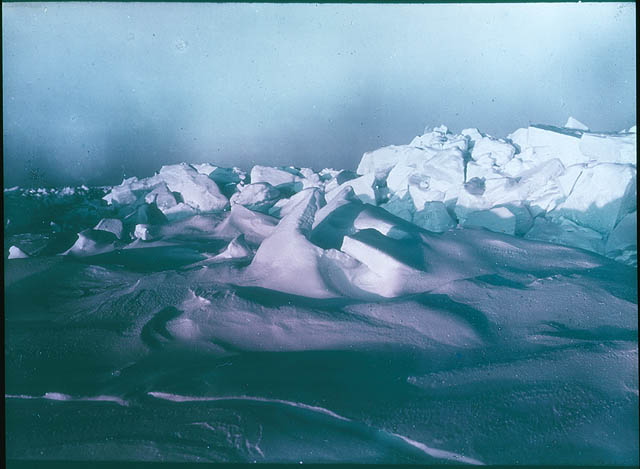
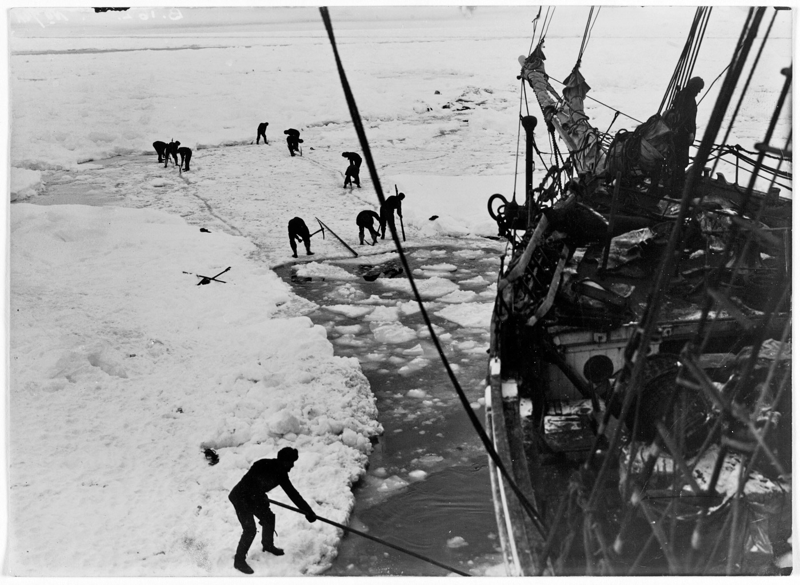
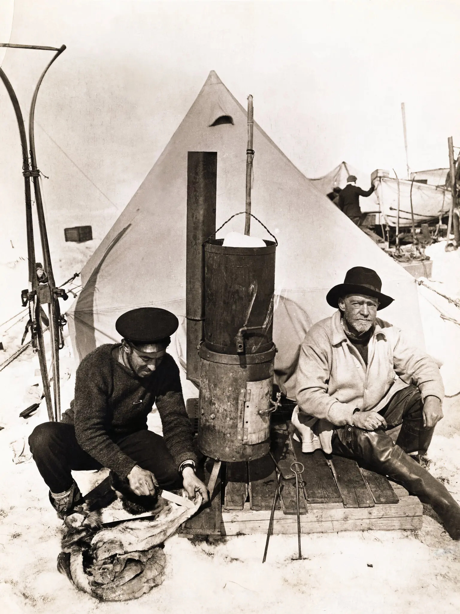
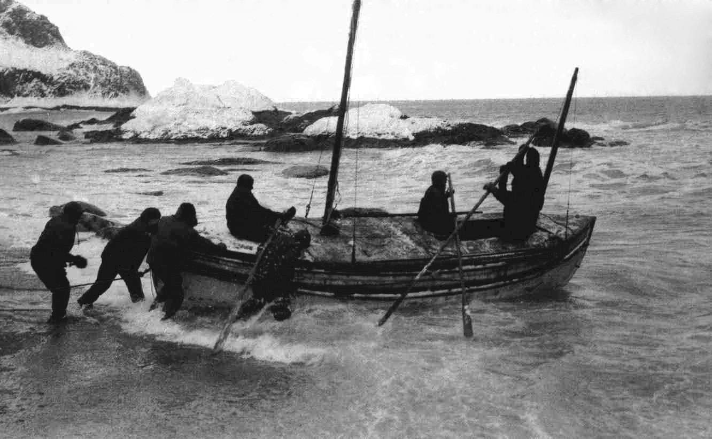

"Men wanted for hazardous journey."
By 1914, the South Pole had been reached. Roald Amundsen had stood there in December 1911; Robert Falcon Scott had followed weeks later, and died on the return. The age of polar firsts seemed to be closing. Ernest Shackleton, twice already a veteran of the southern ice, refused to accept that the map was finished.
He proposed something audacious: to cross the Antarctic continent on foot, from the Weddell Sea to the Ross Sea, by way of the Pole. To do it, he assembled twenty-seven men, a Norwegian-built barquentine of oak and Norwegian fir, and a sled-dog team. He named the ship for his family motto — Fortitudine vincimus, "by endurance we conquer."
Into the Weddell Sea
The Endurance sailed from South Georgia on 5 December 1914. Within two days she met the pack ice — earlier and heavier than expected. For six weeks she pushed south, threading leads through floes that closed behind her like doors.

On 19 January 1915, within sight of the Antarctic mainland, the ice closed for good. The ship was frozen fast, "like an almond in a piece of toffee," as one crew member put it. They drifted with the pack through the winter darkness, helpless, while the floes slowly tightened their grip.
800 days on the ice and sea
The ship is crushed
By October 1915 the pressure had become unbearable. Beams snapped like rifle shots. Water poured into the hold faster than the pumps could clear it. On 27 October, Shackleton gave the order to abandon ship. The men camped on the ice and watched the Endurance lift, twist, and at last on 21 November slip beneath the floe.

"She's gone, boys."— Shackleton, 21 November 1915
They were now 1,200 miles from the nearest known human being, with three small lifeboats, what they could drag, and no way to call for help.
Five months on the floe
Shackleton's first plan — to march across the ice to land — failed within days; the surface was too broken. So they camped, and waited, and drifted. For five months they lived on a slab of ice the size of a small field, eating seal and penguin, watching cracks open beneath their tents.
The discipline Shackleton kept among the men in this period is what most historians regard as his masterpiece. There were no mutinies. There were no breakdowns. Routines were enforced. Grievances were absorbed by the leader and not allowed to spread.

The boat journey to Elephant Island
On 9 April 1916 the floe broke under their feet and the three lifeboats — the James Caird, Dudley Docker, and Stancomb Wills — were launched into the open Southern Ocean. For seven days the men rowed and bailed through gales, sleet, and floes that threatened to grind the boats to splinters. They were soaked, frostbitten, and hallucinating from thirst.
On 15 April they made landfall on Elephant Island — the first solid ground under their feet in 497 days. It was uninhabited, lashed by storms, and lay far outside any shipping route. They had survived, but they had not been saved.
800 miles in an open boat
There was no realistic hope of being found. Shackleton made the decision that defines the expedition. With five men — Worsley, Crean, McNish, McCarthy, and Vincent — he would take the largest lifeboat, the 22-foot James Caird, and sail across 800 miles of the worst ocean on earth to South Georgia, where a whaling station might raise help.
The voyage took sixteen days. Frank Worsley navigated by sextant with only four sun sightings the entire trip, through waves that the crew estimated at sixty feet. They survived a hurricane that sank a 500-ton steamer the same night. When they made landfall on South Georgia on 10 May 1916, they had landed on the wrong side of the island.

Across South Georgia
Three of the six were too broken to go further. Shackleton, Worsley, and Crean — without map, without sleep, with screws driven through their boot soles for grip — crossed the uncharted mountainous interior of South Georgia in 36 hours. No one had ever crossed it before. They walked into the Stromness whaling station on the morning of 20 May 1916. The station manager did not recognize them.
The rescue
The men left on Elephant Island had been waiting under two upturned lifeboats for four and a half months. Shackleton made four attempts to reach them, each turned back by ice. On 30 August 1916, aboard the Chilean tug Yelcho, he broke through at last.
Frank Wild, in command on the island, had rolled up the men's sleeping bags every morning in case that was the day. As the Yelcho appeared, Shackleton, standing at the bow, counted figures on the beach through his binoculars and shouted: "Are you all well?"
"All safe, all well!"— Frank Wild, Elephant Island, 30 August 1916
Every single one of the twenty-eight men who had sailed south on the Endurance came home.
By endurance we conquer
The expedition failed in its stated goal. No one crossed the continent. The ship was lost. The science programme was abandoned. By any 1914 measure of polar achievement, the Imperial Trans-Antarctic Expedition was a disaster.
And yet it has outlasted nearly every expedition that "succeeded." What Shackleton brought back was not a flag plant or a measurement, but a demonstration — that under conditions designed to break men, a leader who refused to lose a single one of them could keep them all alive. That is why, a century later, his name still travels with the ice.